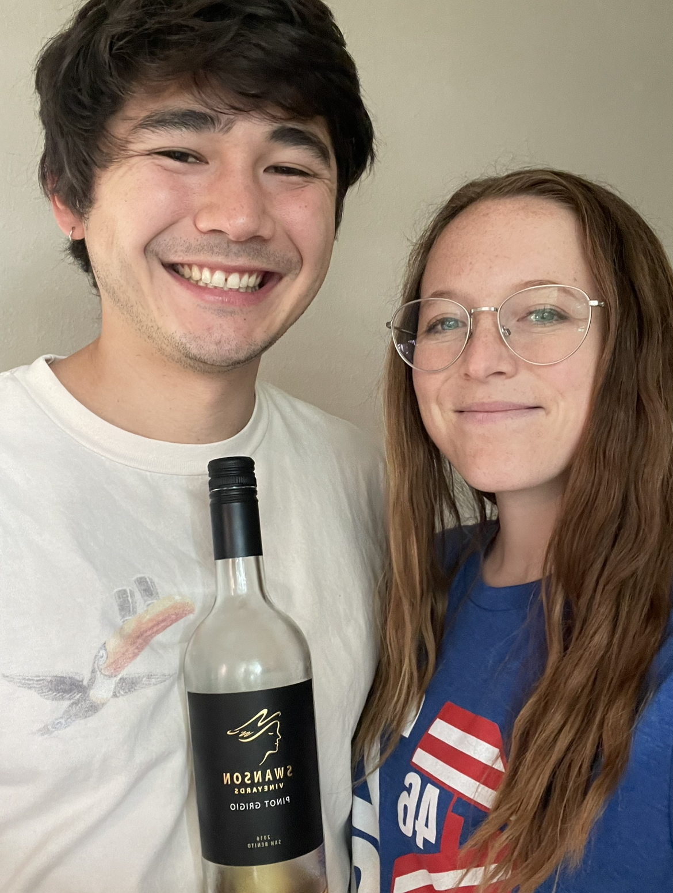

Pinot Grigio
What is it?
Pinot Grigio is a white wine from grapes grown primarily in France, Oregon, and Italy. The grape used in Pinot Grigio wines is actually the same grape used in Pinot Gris wines, though the resulting product has different tasting notes and is marketed as a different wine entirely. (Pinot Grigio is the Italian name, while Pinot Gris is the French name.) The wines do taste slightly different based on the region where the grapes were grown, but there is technically no difference. A fun fact is Pinot Grigio is often "feared" in blind taste tests done by Sommeliers because it lacks unique characteristics and a "calling card", so Sommeliers often try to identify Pinot Grigio by the characteristics it doesn't have.
Primary flavors include lime, lemon, pear, white nectarine and apple. Pinot Grigio wines from America are said to be fruitier than their French counterparts, as well as slightly less acidic. Suggested pairings are fish and dishes with herbs, as well as green vegetables. We had this wine with salmon, couscous with mushroom and dill, and garlic green beans.
Molly's Rating and Tasting Notes
7.1. I only really get apple on the nose, and the tongue isn't much more complex. There's maybe a little bit of nondescript citrus peel. The finish is also not very unique - not really crisp, but also not complex. Overall, I find this wine to be pretty unoriginal but not in a bad way. Sort of just a white wine to sip and not think more about it than that.
Ryan's Rating and Tasting Notes
7.8. On the nose I get apple and lemon. There was also a little bit of a chile pepper scent as well that I was picking up on. I left my wine out for a while, and it's develeoped a smell reminiscent of an old bookstore. On the tongue, I get pear, lemon, and peach. It's not a super flavorful wine, yet the it sits on the middle of tongue and the taste lingers for a while. It's not extremely acidic, but there's enough of a zing to keep it interesting. It' not that sweet, but it's not that dry either. It's rather walking down the middle, which I can't say I'm particularly used to. I will add that when I first sipped this wine, it had come out of the fridge about 10 minutes prior, and I thought it was quite repulsive. However, as I've let it sit out and aerate and warm up, it's become a decent and respectable wine. Overall a decent, middle-of-the-road wine that doesn't try to be too bold. It knows its place and fills a role.
References
[1] Madeline Puckette and Justin Hammack. Wine Folly: The Master Guide. Avery - A Penguin Imprint, New York, NY, 2018.
[2] "Pinot Gris." Wine Folly. https://winefolly.com/grapes/pinot-gris/. Accessed: September 2023.
Wines we haven't finished
- Week 29 - Vino Nobile di Montepulciano